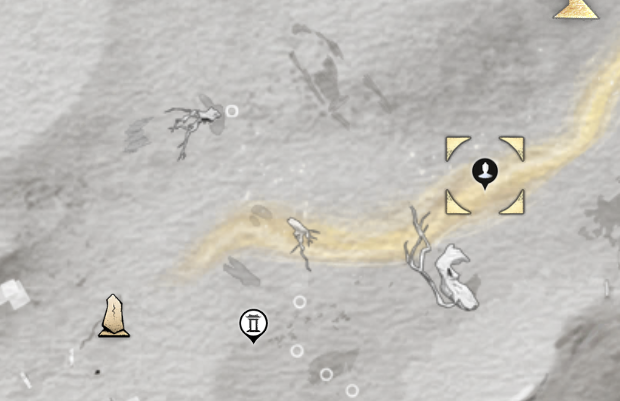
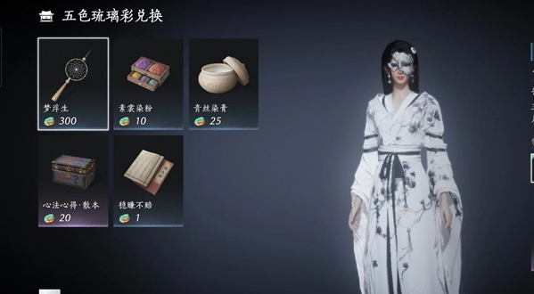

Hexi Treasures
Hexi Prismatic Essence
Main reward: Trade 200 Prismatic Essence for 10 Inner Way Notes.
How to collect Prismatic Essence
During the day, under certain weather conditions, a large area marker appears on the Jade Gate Pass map in Hexi, as shown below. Head there to collect Prismatic Essence.

As you approach, larger Goldcrest Runners with visible afterimages will appear. Ranged weapons make them easier to hit. They drop small piles of gold that can contain Prismatic Essence. You can collect up to 99 per day.
Where to exchange Prismatic Essence
Near the Poplar Bazaar waypoint in Jade Gate Pass, find Chen Qiqi up in a tree to make the exchange. The black NPC marker below shows where to go.

The image below shows what you can redeem. The Inner Way Note: Chest costs 200 Prismatic Essence.
